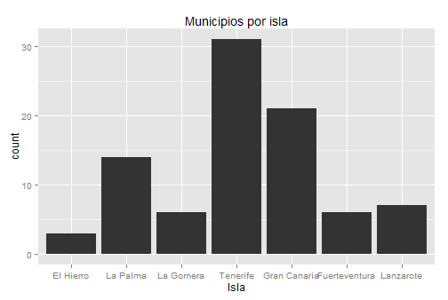

Los comandos gráficos disponibles en ggplot2 son:
qplot() - para “quick plots”
ggplot() - para mejor ajuste y control de todo
Veamos algunos ejemplos:
qplot(data=data.geo.municipios,x=Superficie,main="Histograma de superficie",binwidth=50)
qplot(data=data.geo.islas,x=Superficie,y=Altitud, main="Gráfico de superficie vs. altitud")
qplot(data=data.geo.islas,x=Superficie,y=Altitud, main="Gráfico de superficie vs. altitud",
xlab="Superficie de la isla", ylab="Altitud de la isla")
qplot(data=data.geo.islas,x=Superficie,y=Altitud, main="Gráfico de superficie vs. altitud",
xlab="Superficie de la isla", ylab="Altitud de la isla",
xlim=c(0,2500),ylim=c(0,1500))Con el comando clásico plot(), si queremos representar variables categóricas (e.g. una variable de tipo sexo, “Hombre”,“Mujer”) con colores, debemos realizar nosotros mismos la correspondencia entre categoría y color.
En qplot() se puede especificar varios argumentos: colour, size, shape
qplot(data=data.geo.islas,x=Superficie,y=Altitud, colour = Isla,
main="Gráfico de superficie vs. altitud",
xlab="Superficie", ylab="Altitud") qplot(data=data.geo.islas,x=Superficie,y=Altitud, size = Isla,
main="Gráfico de superficie vs. altitud",
xlab="Superficie", ylab="Altitud") qplot(data=data.geo.islas,x=Superficie,y=Altitud, shape = Isla,
main="Gráfico de superficie vs. altitud",
xlab="Superficie", ylab="Altitud") +
scale_shape_manual(values=1:7)qplot no está limitado a gráficos de dispersión (scatterplot), sino que puede producir casi cualquier tipo de gráfico variando el argumento geom.
Vemos algunos ejemplos:
qplot(data=data.geo.municipios,x=Superficie,y=Altitud, geom = "point")
qplot(data=data.geo.municipios,x=Superficie,y=Altitud, geom = "boxplot", colour = Isla) # cuidado con el tipo de variables
qplot(data=data.geo.municipios,x=Isla,y=Altitud, geom = "boxplot")
qplot(data=data.geo.municipios,x=Superficie,y=Altitud, geom = "smooth", method="loess")
qplot(data=data.geo.municipios,x=Superficie,y=Altitud, geom = c("point", "smooth"), method="lm")
qplot(data=data.geo.municipios,x=Superficie,y=Altitud, geom = "path")
qplot(data=data.geo.municipios,x=Superficie,y=Altitud, geom = "line")
qplot(data=data.geo.municipios, x=Provincia, geom = "bar")
qplot(data=data.geo.municipios, x=Superficie, geom = "histogram")
qplot(data=data.geo.municipios, x=Superficie, geom = "density")Podemos usar sólo qplot() pero la verdadera potencia de ggplot2 está en el manejo de los gráficos por capas (gramática de capas) mediante ggplot().
El qplot recorta bastantes detalles de ggplot() a pesar que permite una sintaxis más familiar y cercana al plot().
Con ggplot(), sin embargo, es posible incorporar a un gráfico diferentes niveles de detalle mediante sucesivas capas (layers).
ggplot(data, mapping) +
layer(
geom = "",
stat = "",
position = "", ....
)| Name | Description |
|---|---|
| abline | Line, specified by slope and intercept |
| area | Area plots |
| bar | Bars, rectangles with bases on y-axis |
| boxplot | Box-and-whisker plot |
| contour | Display contours of a 3d surface in 2d |
| errorbar | Error bars |
| histogram | Histogram |
| line | Connect observations, in order of x value |
| point | Points, as for a scatterplot |
| polygon | Polygon, a filled path |
| step | Connect observations by stairs |
| text | Textual annotations |
| Name | Description |
|---|---|
| bin | Bin data |
| boxplot | Calculate components of box-and-whisker plot |
| contour | Contours of 3d data |
| density | Density estimation |
| function | Superimpose a function |
| identity | Don’t transform data |
| quantile | Continuous quantiles |
| smooth | Add a smoother |
| step | Create stair steps |
| sum | Sum unique values. Useful for overplotting on scatterplots |
| summary | Summarise y values at every unique x |
| unique | Remove duplicates |
Un scatterplot:
ejemplo1<-qplot(data=data.geo.municipios,x=Superficie,y=Altitud, colour = Isla)se compone de (http://docs.ggplot2.org/current/index.html):
Un conjunto de datos por defecto (data).
Una asignación de variables del conjunto de datos a atributos gráficos (aesthetics).
ejemplo1<-ggplot(data=data.geo.municipios, mapping=aes(x=Superficie,y=Altitud, colour=Isla))Y de las siguientes capas o layers:
ejemplo1 + layer(geom="point") # o tambien: ejemplo1 + geom_point() ejemplo1 + layer(geom="point", stat="identity" ) # o tambien: ejemplo1 + geom_point(stat="identity")
# o tambien: ejemplo1 + geom_point() 
Además, se puede
ejemplo1<-ggplot(data=data.geo.municipios, mapping=aes(x=Superficie,y=Altitud, colour=Isla))
ejemplo1 + geom_point(mapping=aes(shape=Provincia) ) + scale_shape(solid = FALSE) # cambiar la forma
ejemplo1 + geom_point(mapping=aes(size=Provincia) ) + scale_size_discrete(range = c(2, 4) ) # cambiar el tamaño ejemplo1 + geom_point() + coord_polar() ejemplo1 + geom_point() + facet_grid(. ~ Provincia)Un diagrama de barras:
ejemplo2<-qplot(data=data.geo.municipios,x=Provincia, geom = "bar", fill = Isla) ejemplo2<-ggplot(data=data.geo.municipios, mapping=aes(x=Provincia, fill=Isla)) ejemplo2 + layer(geom="bar") # o tambien: ejemplo2 + geom_bar() ejemplo2 + layer(geom="bar", stat="bin" )
# o tambien: ejemplo2 + geom_bar(stat="bin")
# o tambien: ejemplo2 + geom_bar() ejemplo2 + layer(geom="bar", stat="bin", position="dodge")
# o tambien: ejemplo2 + geom_bar(position=position_dodge() ) Algunos ejemplos mas (densidad e histograma):
qplot(data=data.espacios.nat, x=Superficie, geom = "density", colour = Isla)
# las densidades son superpuestas
ggplot(data=data.espacios.nat, mapping=aes(x=Superficie,colour=Isla)) +geom_density()qplot(data=data.espacios.nat, x=Superficie, geom = "histogram", colour = Isla)
# los histogramas son apilados y se colorea el borde
ggplot(data=data.espacios.nat, mapping=aes(x=Superficie,colour=Isla)) +geom_histogram()qplot(data=data.espacios.nat, x=Superficie, geom = "histogram", fill = Isla)
# los histogramas son apilados y se colorea el interior
ggplot(data=data.espacios.nat, mapping=aes(x=Superficie,fill=Isla)) +geom_histogram()Algunos ejemplos mas (gráficos de barras):
qplot(data=data.espacios.nat, x=Espacio.natural, geom = "bar", fill = Isla)
# también los gráficos de barras son apilados
ggplot(data=data.espacios.nat, mapping=aes(x=Espacio.natural,fill=Isla)) +geom_bar(position=position_dodge() )qplot(data=data.espacios.nat, x=Espacio.natural, geom = "bar", fill = Isla, position="dodge")
# barras colocadas unas al lado de otras
ggplot(data=data.espacios.nat, mapping=aes(x=Espacio.natural,fill=Isla)) +geom_bar()Algunos ejemplos mas:
qplot(data=data.geo.municipios, x=Provincia, geom = "bar")
ggplot(data=data.geo.municipios, mapping=aes(x=Provincia)) +geom_bar()qplot(data=data.geo.municipios, x=Provincia, geom = "bar", fill = Isla)
ggplot(data=data.geo.municipios, mapping=aes(x=Provincia,fill = Isla)) +geom_bar()Algunos ejemplos mas:
qplot(data=data.geo.municipios, x=Superficie, geom = "histogram")
ggplot(data=data.geo.municipios, mapping=aes(x=Superficie) +geom_histogram()
qplot(data=data.geo.municipios, x=Superficie, geom = "density")
ggplot(data=data.geo.municipios, mapping=aes(x=Superficie) +geom_density()
qplot(data=data.geo.municipios, x=Superficie, geom = "density", colour = Provincia) # las densidades son superpuestas
ggplot(data=data.geo.municipios, mapping=aes(x=Superficie, colour = Provincia)) +geom_density()Algunos ejemplos mas:
qplot(data=data.geo.municipios, x=Superficie, geom = "histogram", colour = Provincia)
# los histogramas son apilados y se colorea el borde
qplot(data=data.geo.municipios, x=Superficie, geom = "histogram", fill = Provincia)
# los histogramas son apilados y se colorea el interior
qplot(data=data.geo.municipios, x=Superficie, geom = "histogram", fill = Provincia, position="dodge")
# las barras se pueden representar sin apilar